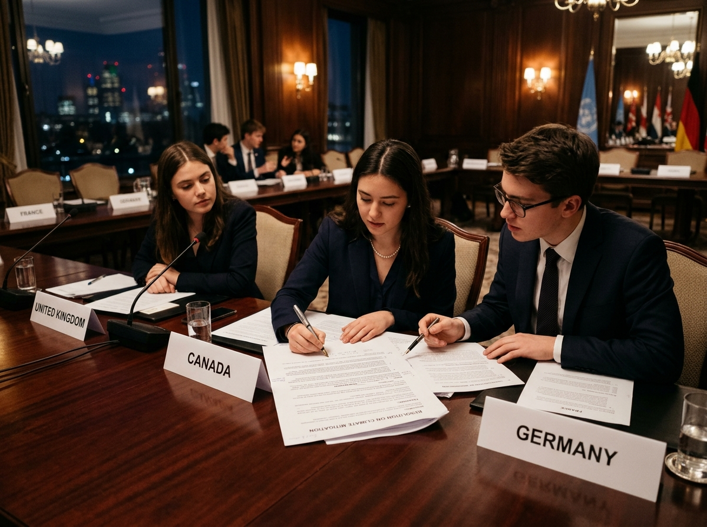

Sovereign Multilateral Conference of the Parties - MUN
Built for diplomacy, known for excellence. Join the premier circuit where global leaders are forged through rigorous debate and collaborative problem-solving.

The Standard of Excellence
SMCP stands at the pinnacle of Model United Nations conferences, committed to fostering high-level debate and international relations literacy. We believe that true diplomacy is an art, one that requires precision, empathy, and unwavering dedication to the truth. Our sessions are meticulously designed to challenge delegates, pushing them to move beyond rhetoric and towards substantive resolution.
“Where the leaders of tomorrow navigate the complexities of today.”
Aspiring diplomats representing diverse perspectives across our global online simulations.
Simulating high-stakes diplomacy across disarmament, economy, climate, and biodiversity.
Diverse viewpoints integrated into every resolution and debate.
Our Committees
Explore our four confirmed committees across the India and Global editions, addressing international security, economic stability, climate action, and biodiversity.
Official Partner of United Diplomats
SMCP Model United Nations is proud to be an official partner of United Diplomats. Together, we bring delegates together from around the world for engaging diplomacy, high-level debate, collaboration, and unforgettable committee experiences.
At SMCP MUN, diplomacy meets passion and debate creates impact.
Our inaugural global online simulation uniting 200+ delegates worldwide.
Specialized joint online conference blending diplomacy with mystery-driven investigation.
Online simulation · Committees: DISEC & ECOSOC · Up to 1,500 INR cash prizes.
Register on MyMUN →Online simulation · Committees: UNFCCC & UNFCBD · 300 delegates across 20+ countries.
Register on MyMUN →